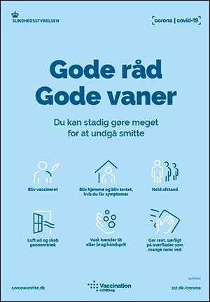

Sådan holder du en god hånd -og negle hygiejne under corona
Pas på dig selv
Negle hygiejne er et afgørende udtryk for kroppens velvære. Særligt under en pandemi er det vigtigt at være opmærksom og praktisere god negle hygiejne for at holde smitten i skak.
Selvom man jævnligt vasker hænder, er det særligt nu vigtigere end nogensinde at bibeholde fokusset på at mindske bakterier spredningen.
Føl dig sikker hos os
Hos Atelier Beauty gør vi en ekstra indsats for at holde hygiejne niveauet oppe.
Vi har netop købt den helt ny ”Enbio”, der er den højeste standard indenfor autoklaver. Denne maskine steriliserer bakterier gennem varme og tryk og gør dermed dit besøg i salonen sikkert og bekymringsfrit!
Generelle retningslinjer for at holde ens negle rene
- Lad vær’ med at dele personlig hygiejne produktet, dette gælder også negleklippere.
- Overvej at bruge gummihandsker eller lign. Under rengøring, da dette er med til at sørge for at neglene ikke flosser som de ellers gør under forlænget vand eksponering.
- Undgå så vidt muligt produkter med acetone i, da de er stærkt opløsende og er hårde mod neglene
- Vask minimum hænder i 20 sekunder
- Ved at holde hænderne fugtige med håndcreme forebygger man at neglebåndene vokser for meget.
- Undgå at bide negle da dette giver mulighed for direkte adgang for bakterier til din mund
